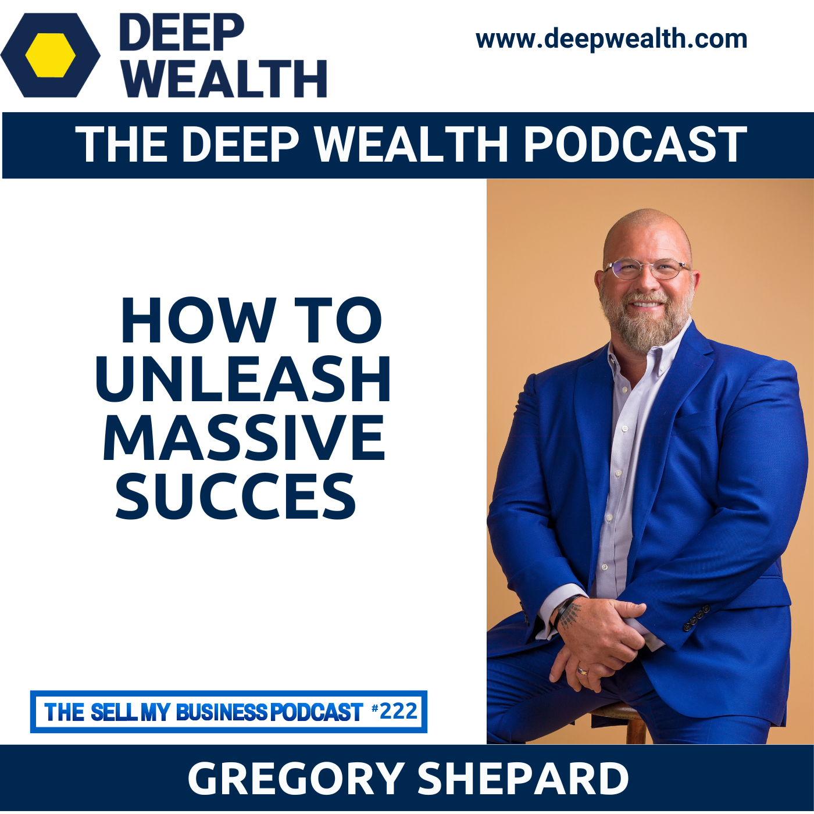

Guest spots across the founder, investor, and operator world — Mixergy, Deep Wealth, The Business Strategist, Hustle & Flowchart, Voice America — and the Forbes Startup Science Podcast, which Gregory hosts.
After over 1,000 interviews with tech leaders around the world, Gregory is the real deal. I have yet to meet anyone who could not be inspired by Gregory.Neil Hughes, Host, The Tech Blog Writer Podcast
Gregory hosts Startup Science on Forbes Radio — the show where the framework gets tested in real time, conversation by conversation. Thousands of founder, investor, and operator interviews built the lifecycle architecture that later became the book.
A learning podcast built on a subject-based approach — each episode takes Gregory's own writing and turns it into a focused deep dive on one specific subject within the Startup Lifecycle, start to finish. The narration is an AI voiceover; every word of the content is written by Gregory. Made for founders who'd rather learn one thing properly than skim ten.
A curated twelve, picked for the depth of conversation and the through-line on the framework.
Startup Story · The $985M eBay Acquisitions — Gregory walks through the founding of AffiliateTraction and the path to the eBay Enterprise deal.
AffiliateTraction with Gregory Shepard — the unedited version of what it took to build, sell, and integrate.
12 Liquidity Events — how Gregory approaches the exit phase before a company even ships its MVP.
The Real Reason Startups Fail — the phase-by-phase failure modes and the operating moves that prevent each.
Empowering Entrepreneurs Worldwide — the moment a startup gets its first real customer, and what changes.
Gregory Shepard on the Startup Lifecycle — the book's seven phases, walked through in conversational form.

Gregory takes a limited number of podcast bookings per quarter — 30-minute interviews to 90-minute deep-dives, in-studio or remote. Inquiries reviewed personally.